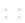
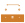

owned-four-copper-forced-inner.kicad_pcb
These are KiCad plots of the exact original and candidate copper. Saved zone fills are shown; plotting does not refill zones or perform DRC. The original may already contain reference routes. Compare each layer at the same board extent.
The candidate passed its recorded routing checks. All warnings still require review; this is not electrical or manufacturing approval. Open the candidate .kicad_pro in KiCad project manager, then Tools → PCB Editor. Run DRC with zone refill and every severity visible. To reject, close the disposable project and retain the original. To accept for further design work, keep this separate project; never overwrite an open source board. Any edit requires new validation.
{
"saved_native_findings": {
"opens": 0,
"blocking": 0,
"warnings": 6,
"exclusions": 0
},
"candidate_metrics": {
"version": "10.0.7",
"pads": 6,
"footprints": 6,
"zones": 3,
"vias": 2,
"track_length_mm": 152.26367124472972,
"copper_layers": 4
},
"ignored_checks": [
{
"description": "Track endpoint not centered on via",
"key": "track_not_centered_on_via"
},
{
"description": "Tuning profile track geometries",
"key": "tuning_profile_track_geometries"
}
]
}
